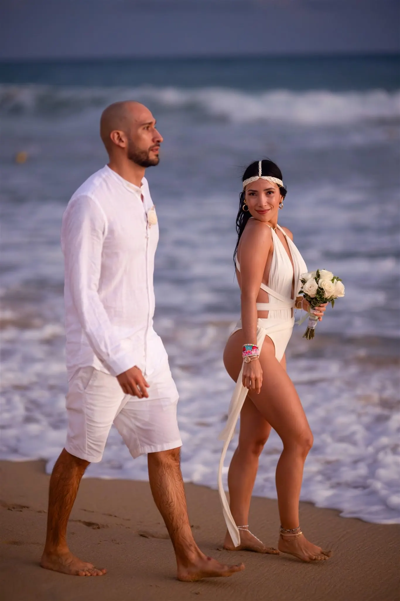
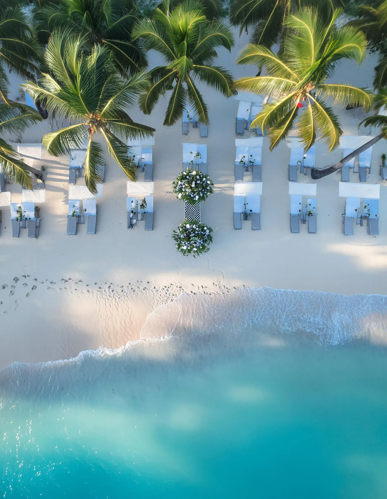
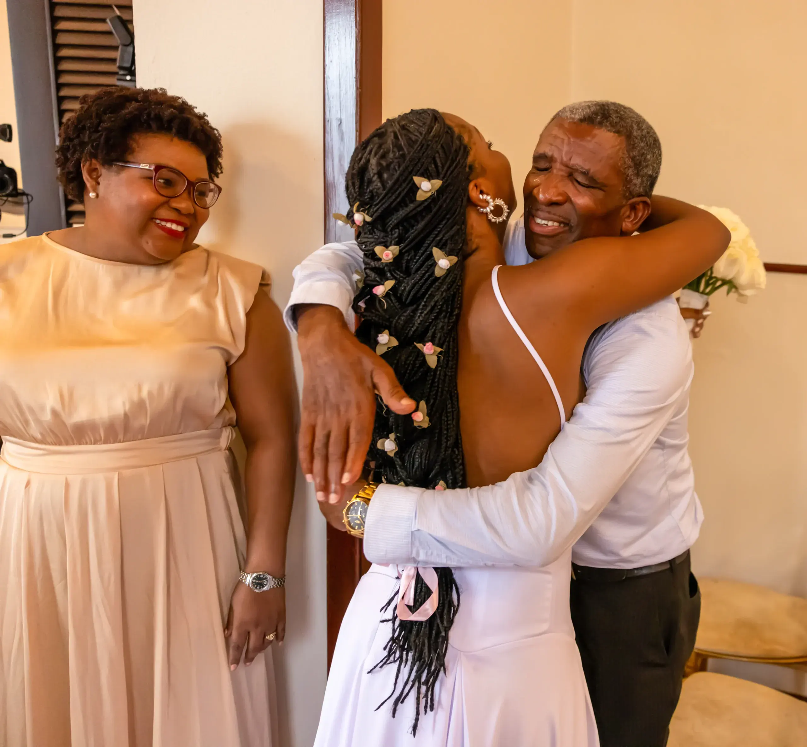
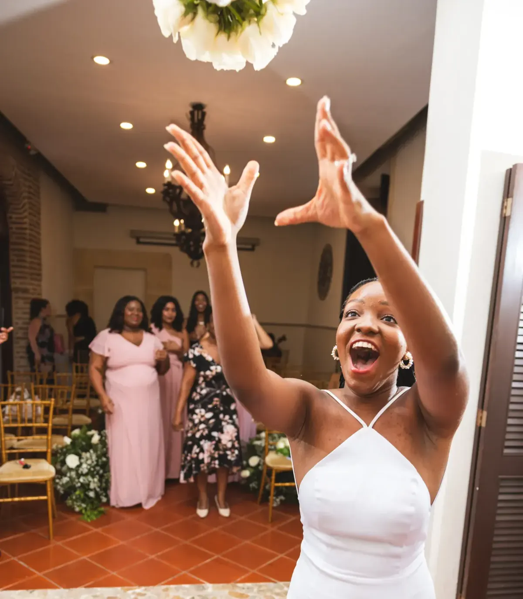
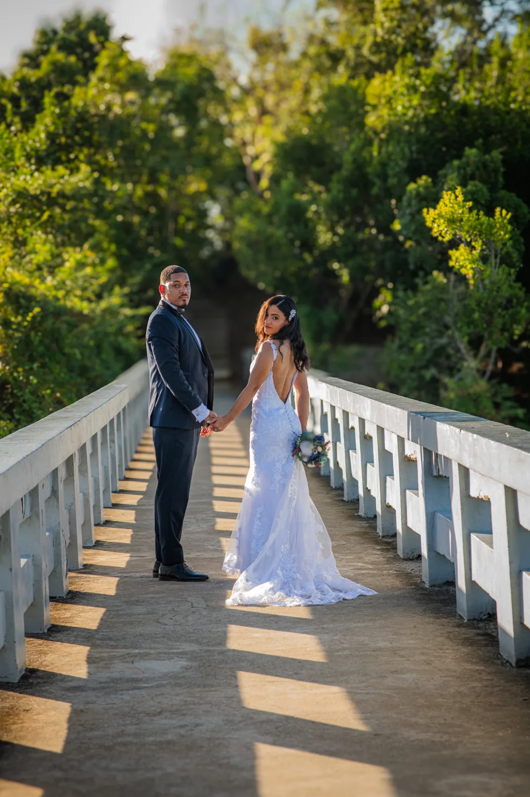
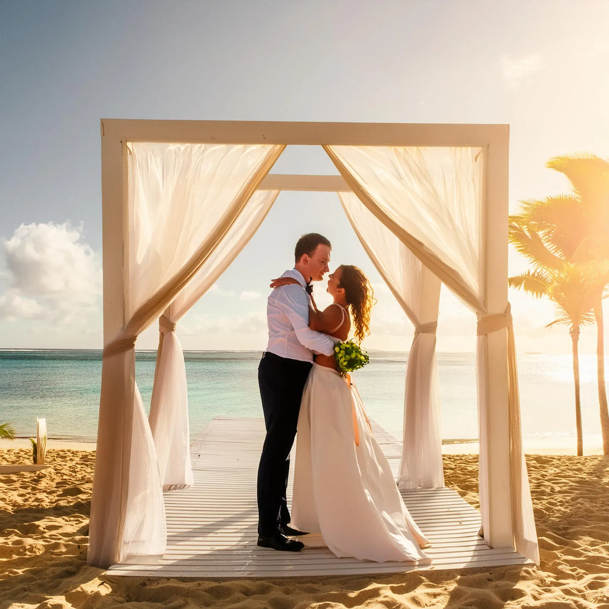
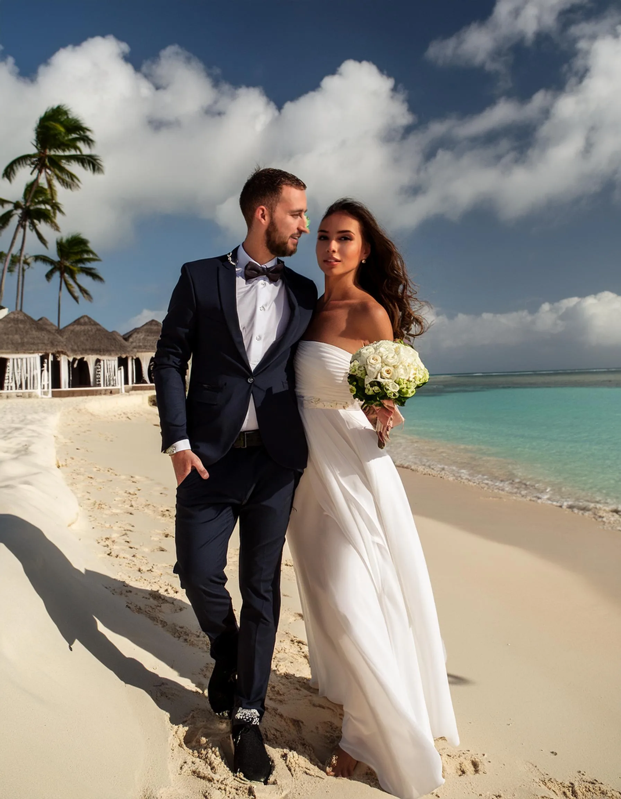
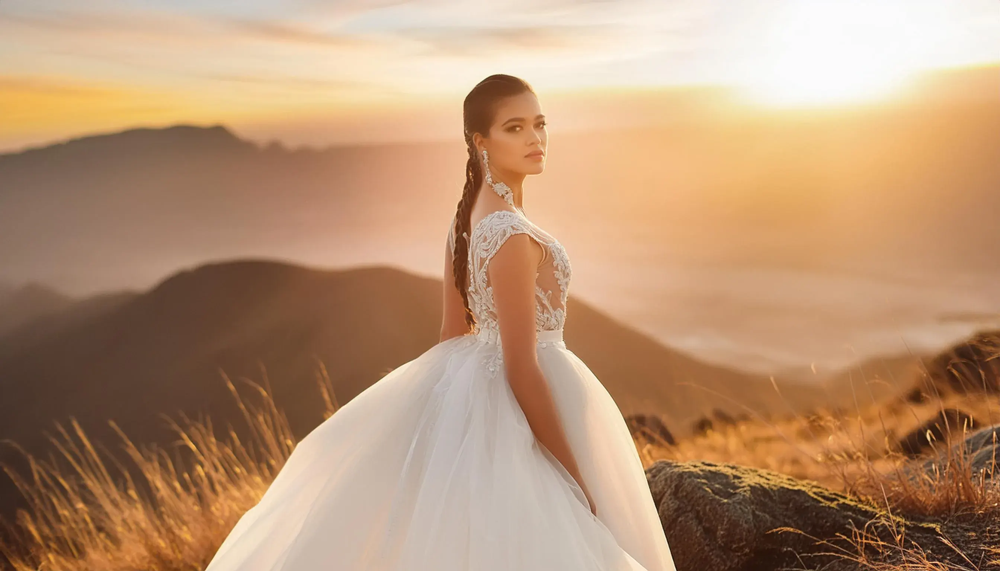

Último trabajo Boda en Punta Cana Ver proyectoDesde 2020
Fotógrafo de bodas en Santo Domingo, Punta Cana y República Dominicana
Fotografía de bodas en República Dominicana
Babula Shots ofrece servicios de fotografía de bodas en Santo Domingo, Punta Cana, La Romana y toda la República Dominicana. Especializados en bodas destino, capturamos momentos reales con un estilo natural, editorial y cinematográfico.
Nuestro servicio incluye cobertura completa de boda, sesiones pre-boda, fotografía de compromiso y contenido visual profesional para parejas que buscan calidad premium en su boda en el Caribe.
Sobre
Babula Shots es un estudio de fotografia de bodas con sede en Republica Dominicana, especializado en capturar bodas en Santo Domingo y Punta Cana desde 2020. Nuestra mirada cinematografica y emocional transforma cada momento de tu boda en imagenes que cuentan una historia unica. Trabajamos con equipo profesional, iluminacion natural y una direccion organica que hace que cada pareja se sienta comodamente autentica delante de la camara. Desde la preparacion hasta el ultimo baile, cubrimos cada detalle para que tus recuerdos perduren por siempre.
Reserva tu cita


Trabajos seleccionados
Servicios
Cobertura de bodas
Pre-boda y compromiso
Video y contenido



Precios
Paquetes para bodas en República Dominicana.
Cobertura esencial
Fotografía para ceremonias íntimas, sesiones de pareja y celebraciones cortas.
Cotizar paqueteBoda completa
Cobertura desde la preparación hasta la recepción, con galería editada.
Cotizar paqueteLocaciones
Cobertura para bodas destino en el Caribe.
Fotógrafo de bodas en Punta Cana
Cobertura natural y editorial para ceremonias en playa, resorts, villas privadas y bodas destino en Punta Cana.
Fotógrafo de bodas en Santo Domingo
Fotografía profesional para bodas en Santo Domingo, Zona Colonial, iglesias, hoteles y celebraciones urbanas.
Bodas en La Romana y República Dominicana
También trabajamos en La Romana, Casa de Campo, Bayahibe y otras locaciones de República Dominicana.
Proceso
Desde el sí quiero hasta el último baile.
01 — Descubrir
Definimos historia, locación, horario y estilo visual.
02 — Crear
Capturamos cada emoción con dirección natural y equipo profesional.
03 — Entregar
Recibes recuerdos refinados listos para compartir, imprimir y guardar.
Testimonios
"Babula capturó cada detalle de nuestra boda en Punta Cana. Las fotos se ven como una película. Increíble profesional."
"La mejor decisión que tomamos. Nuestra boda en la Zona Colonial quedó inmortalizada con un estilo que nos encanta."
"Profesional, puntual y con una mirada única. La galería nos dejó sin palabras. 100% recomendado."
Preguntas frecuentes
¿Cuánto cuesta un fotógrafo de bodas en República Dominicana?
Nuestros paquetes de boda en República Dominicana empiezan desde cobertura esencial para ceremonias íntimas hasta boda completa con galería editada. Contáctanos para una cotización personalizada según tu locación y número de horas.
¿Cobras adicional por viajar a Punta Cana o Santo Domingo?
Cubrimos Santo Domingo y Punta Cana sin costo adicional de viaje. Para otras provincias de República Dominicana, consultanos para coordinar logística.
¿En cuánto tiempo recibo las fotos de mi boda?
La galería editada se entrega entre 3 a 4 semanas después de la boda, a través de un enlace privado de alta resolución para descargar, compartir e imprimir.
¿Incluyen sesión pre-boda en los paquetes?
La sesión de compromiso o pre-boda está disponible como complemento en cualquier paquete. Es ideal para probar el estilo fotográfico y crear contenido para tu save the date.
¿Trabajan con video además de fotografía?
Sí, ofrecemos paquetes de video y contenido complementario para bodas en Punta Cana y Santo Domingo, incluyendo reels y highlight clips para redes sociales.